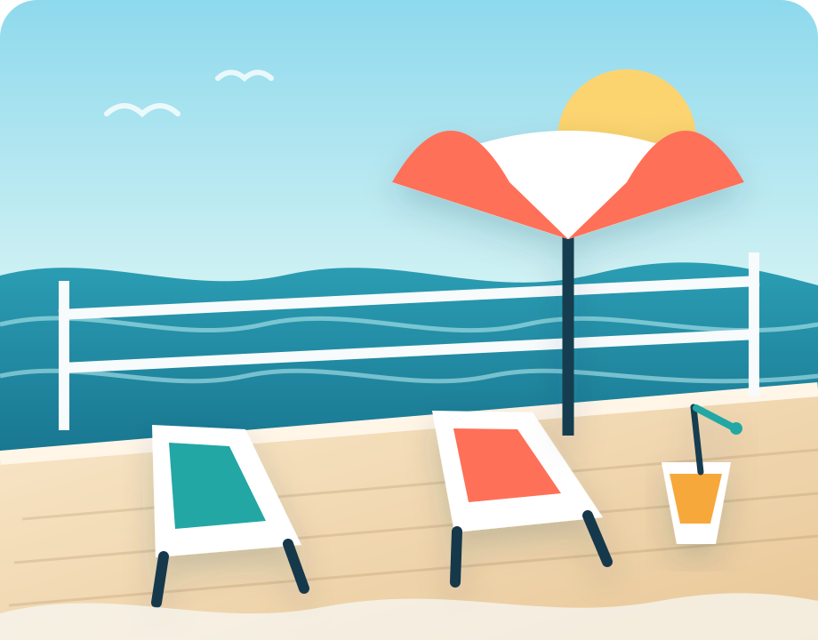

Independent Carnival cruise intelligence
Plan the cruise you thought you booked.
Know the ship, cabin, crowds, dining and port-day tradeoffs before they become expensive vacation lessons.
- Independent advice
- Ship-by-ship strategy
- No generic travel fluff

VACATION MODESTARTS HERE
Know before you goCabins, dining, decks, crowds and first-day moves.
Built for real decisionsCompare ships. Flag cabin risks. Budget honestly. Protect port days.
🛳️ Ship personality
☀️ Lido deck strategy
🛏️ Cabin warnings
🏝️ Port-day plans
A better kind of cruise site
Less brochure. More insider planning.
Most cruise content tells you what exists. Lido Deck Insider focuses on what changes your experience: crowd patterns, long walks, limited reservations, cabin noise, port timing and where paying more is—or is not—worth it.
Start with the ship
Different Carnival ships create very different vacations.
Compare scale, layout, energy, signature attractions, dining variety and the type of cruiser each ship serves best.
Excel class
Mardi Gras
Huge variety, six themed zones and a ship that rewards advance planning.
Open ship guide → Excel classCarnival Celebration
Miami energy, destination-inspired zones and one of Carnival’s deepest venue lineups.
Open ship guide → Excel classCarnival Jubilee
Texas personality, family attractions and a massive neighborhood-style layout.
Open ship guide → Vista classCarnival Vista
A lively large ship with strong outdoor features and cabin choices worth studying.
Open ship guide → Vista classCarnival Horizon
Busy, polished and packed with dining, entertainment and family options.
Open ship guide → Dream classCarnival Breeze
A more manageable ship with classic Carnival energy and strong open-deck appeal.
Open ship guide →Plan the expensive decisions first
Three ways to use Lido Deck Insider.
Start free, use the interactive tools, then upgrade only when a deeper planning system will genuinely save time or money.
01Find better port days
Browse excursion styles, timing risk and independent-booking considerations.
Explore excursions → 02See the real trip costEstimate fares, gratuities, drinks, dining, parking, excursions and onboard spending.
Run the calculator → Complete system03Build the whole planUse the printable toolkit for ship choice, cabin selection, embarkation, dining, port days and budgeting.
See the toolkit →The Lido Deck advantage
Spend less vacation time standing in the wrong line.
We focus on the moments that shape the cruise: the first lunch rush, pool-deck traffic, hard-to-change reservations, long cross-ship walks and cabin locations that look fine until bedtime.
Plan the feeling, not just the itinerary
What kind of cruise do you want?
- Big-ship attractions and nonstop variety
- A calmer pool deck and easier navigation
- Family activities without constant backtracking
- Dining choices that fit your budget
- Nightlife near your cabin—or far away from it
- A port plan with enough return margin
Plan the decisions that matter
Four shortcuts to a smoother cruise.
Skip generic packing-list content and go straight to the choices that are expensive, crowded or hard to undo.
01
Choose the ship
Compare atmosphere, layout, dining, pools, entertainment and family features.
Browse the full fleet →02Choose the cabin
Score location tradeoffs, noise risks, motion, walking and deck placement.
Run the cabin checker →03Win the first day
Handle time-sensitive tasks without turning embarkation into a race.
See the first-day plan →04Protect port days
Balance excursions, transportation, backups and all-aboard risk.
Build a port strategy →The complete cruise-planning toolkit
Turn scattered research into one usable plan.
Six practical worksheets cover ship choice, cabins, embarkation, dining, port timing and onboard spending.
See what is included- Ship Comparison Scorecard
- Cabin Decision Worksheet
- Embarkation Day Game Plan
- Dining & Reservation Planner
- Port-Day Risk & Timing Sheet
- Onboard Budget Tracker